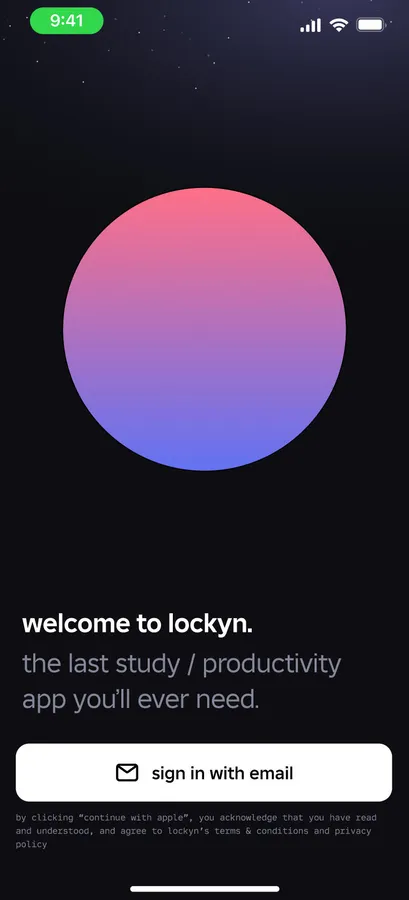
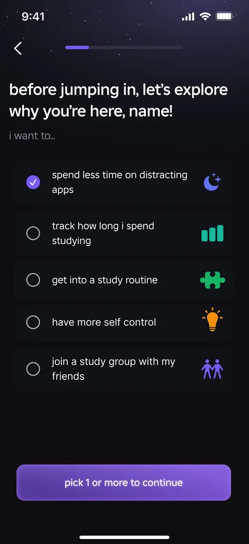
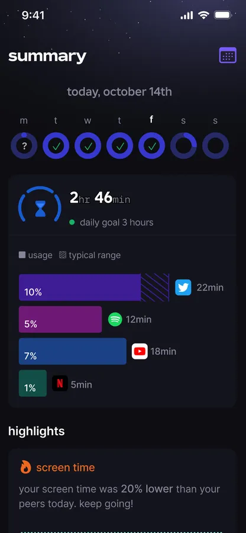

mobile · commercial · releasing 2026
Lockyn
A studying and productivity app for GCSE and sixth-form students. Focus timer, daily goals, screen-time summaries, study groups. The kind of app I wanted to exist while I was doing my A levels, so I built it during them.
- TypeScript and JavaScript, Firebase on the back end.
- Fluent, professionally designed UI. The screenshots are real, not mockups.
- It's my Computer Science NEA, which means it legally cannot ship until after results day. Release: 2026.



